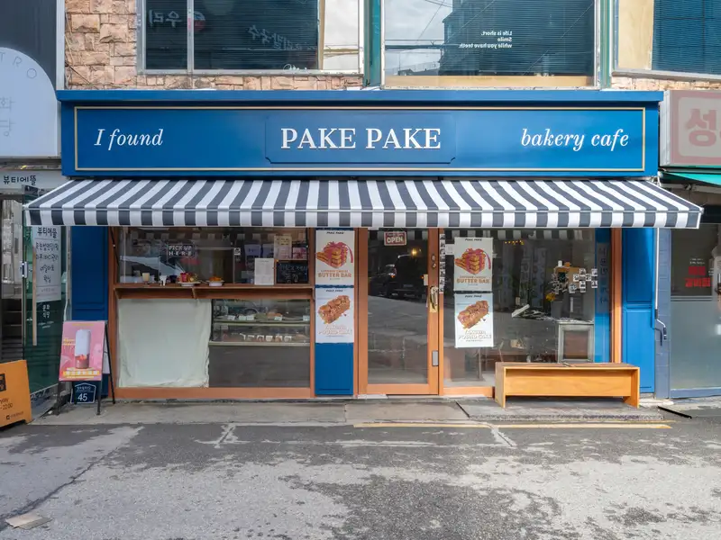
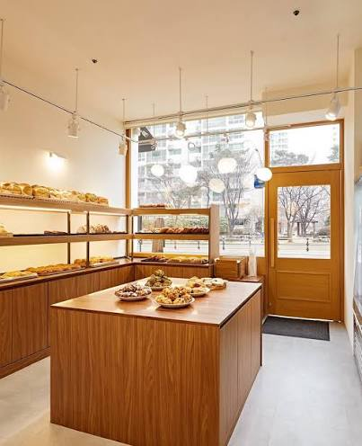
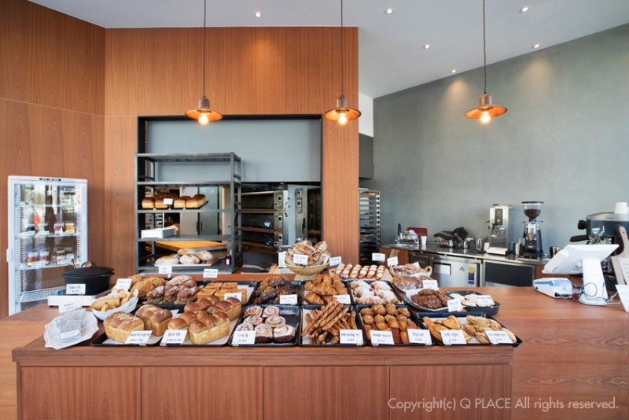
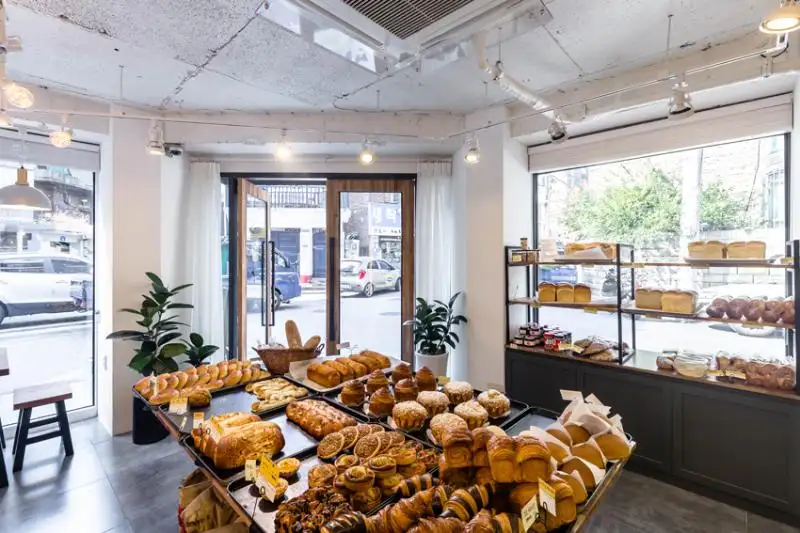

에셋 백과에서 상가·소품 보기
청색 금테 간판 · 검정과 흰색 줄무늬 차양 · 나무 문틀 · 목재 중앙 매대. 원본 상호를 조금 바꾼 가상의 빵집입니다.
보존한 소담빵집 보기
빵집을 불러오는 중입니다.
백과 제작본
배치 확인
문 앞부터 뒤쪽까지 통로를 비우고 왼쪽에 중앙 매대와 벽면 선반, 오른쪽 뒤에 계산·커피 작업대를 배치했습니다. 평판등과 간접광 표현으로 실내를 균일하게 밝힙니다.
제공한 레퍼런스

외관 기준: 간판·차양·문 위치·포스터·벤치
내부 기준: 목재 중앙 매대와 열린 진열
후면 기준: 작업대·오븐·커피 기계
진열 기준: 상품 묶음과 통로서로 다른 내부 사진을 조합한 가상 배치입니다. 치수는 사진 비례 추정값입니다. 제공 사진은 비교용으로 보관하며 모델 표면에는 직접 입히지 않았습니다.소담빵집은 별도로 보존했습니다. 이 두 번째 제작본도 백과에 통합한 작업이며 에셋 백과 통합본이며 동네 자동 배치는 미연결입니다.